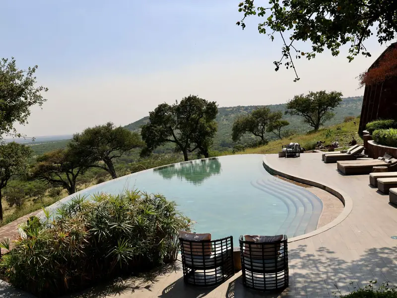

If you run a lodge, camp or guest house, someone has probably told you that you need a website. Someone else has probably told you that WhatsApp and a Facebook page are enough. Both can be right, depending on who your guests are, where they come from and how you take bookings. A website is one tool. It will not create demand by itself, and it will not fix a business that is hard to contact.
The five questions below are the ones I use when reviewing an online presence. You can answer them yourself, with a phone and about half an hour.

1. What does a guest find when they search for you?
Start where your guests start. On your phone, ideally on mobile data, search for your property's name. Then search for the kind of phrase a stranger would use, such as your town plus “lodge” or “accommodation”. Write down what appears on the first screen.
- Is there an official page or listing that is clearly yours?
- Is the information accurate: phone number, location, what you offer?
- Does a third-party listing show old rates, old photos or a closed activity?
- Do your listing, Facebook page and any other profile say the same thing?
This is also where a website can help in a specific way. Google's guidance says page titles should be descriptive and concise, and should be distinct for each page. It also notes that Google may rewrite a title if it does not match the page. A website gives you control over what each page says about you, even though search engines decide what to show.
If what guests find is accurate, current and easy to act on, you may be in better shape than you think. If it is missing or inconsistent, that is the first thing to fix. A website is one way to fix it, not the only way.
2. What does a guest need to know before they enquire?
People rarely enquire about something they cannot picture. Before a guest sends a message, most want to know:
- The rooms or units: how many people they sleep, what the beds and facilities are.
- What is included: meals, linen, activities, transfers.
- Rates, or how to ask for them. Even “rates depend on season, message us with your dates” is better than silence.
- Where you are and how to get there, including any road, boat or transfer details.
- What there is to do: fishing, cruises, game viewing, rest.
- The rules: check-in and check-out times, children, pets, cancellations.
- Photos that match the real rooms.
- Who to contact, and how.
A simple test: ask two people who have never visited to look at what you have online now, then list the questions they still have. Every unanswered question is a gap, and the list is a ready-made plan for what a page should say.
3. Can a visitor compare your options?
A guest choosing between a two-bedroom unit and a four-bedroom unit, or between a boat cruise and a game drive, wants to see them side by side. If you offer only one kind of room, comparison matters less. If you offer several, comparison is the main job of the page.
Illustration only: fictional units, not real rates
| Unit A | Unit B | |
|---|---|---|
| Sleeps | 2 guests | 6 guests |
| Kitchen | Kitchenette | Full kitchen |
| View | Garden | Lake |
| Rates | Message us for dates | Message us for dates |
The point of the example is the structure: the same rows for each option, in plain words, with a clear way to ask about dates.
4. What happens when someone taps “contact” on a phone?
Open your own page, or your Facebook page, on a phone and try to enquire, as a guest would.
- How quickly can you find a contact option?
- Does the phone number dial when tapped?
- Does a WhatsApp link open a chat with a message already started? A WhatsApp “click to chat” link uses the form
wa.me/<number>, with the number in full international format and an optional pre-filled message after?text=. - If there is a form, can you finish it on a phone, and does the message really reach you?
- Who answers, how soon, and what do they say?
A website can deliver an enquiry to you. It cannot answer it for you. If enquiries arrive and wait for days, a better page will not help. This is the difference between a click and a real enquiry, which the article on easier enquiries explores further.
5. Can you keep the details current?
Out-of-date information does more harm than none: a rate that changed, an activity that stopped, a phone number that no longer works. Before building anything, decide who will update it, how often, and how.
The options are to do it yourself, to ask someone to do it as needed, or to arrange regular care. A small, accurate site is better than a large, neglected one.
When you may not need a full website yet
A website is not always the next step. You may be fine without one for now if:
- Most of your guests come through repeat visits, referrals or agents, and are happy to message you.
- Your Google listing, Facebook page and WhatsApp profile are accurate, consistent and easy to act on.
- You cannot yet commit to keeping a website current.
- Your budget would do more good elsewhere, for example on better photographs.
A website tends to help most when guests do not know you yet, are comparing several places, want detail before they message, or want to share a link with family or friends. Even then, it improves clarity. It does not guarantee bookings.
A one-page readiness checklist
Answer yes or no to each. Every “no” is a place to start.
- My name, phone number and location are the same everywhere guests might find them.
- A stranger can tell from one screen what I offer and where I am.
- Guests can see what each room or experience includes.
- Rates are shown, or it is clear how to ask for them.
- My photos match what guests will actually find.
- Tapping my WhatsApp or phone link works on a real phone.
- Someone answers enquiries, and I know roughly how fast.
- Someone is responsible for keeping details up to date.
What to do next
Work through the five questions first. Fix inconsistent listings, because that costs little. If you decide a website would help, start with what guests actually ask, and keep it small. A Hospitality Website from Local Edge is designed around exactly these needs: rooms or experiences, a gallery, location and a clear WhatsApp enquiry path. It does not include a live availability system or online payments, which would be assessed and quoted separately.
Request a Free Demo See the Hospitality Website
Sources
- DataReportal, Digital 2026: Zimbabwe. Internet users and penetration, reflecting data available in October 2025. Checked October 2026.
- Google Search Central, Influencing your title links in search results. Guidance on descriptive, concise, unique titles, and on Google rewriting titles. Checked October 2026.
- WhatsApp, How to use click to chat. Link format and pre-filled message. Checked October 2026.